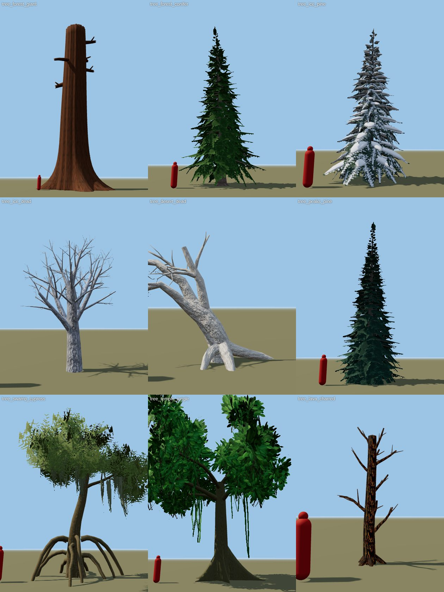
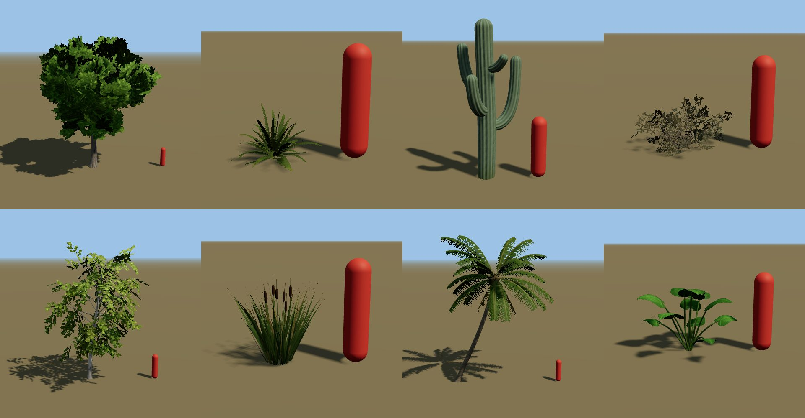

17 game-ready trees and plants (glTF binary, Y-up, metres, origin at the base, textures embedded, leaves alpha-masked). Grown procedurally in Blender with CC0 bark textures and painted foliage. The red capsule in the previews is a 1.8 m person.


| File | World | Height | Triangles | Size | Sources |
|---|